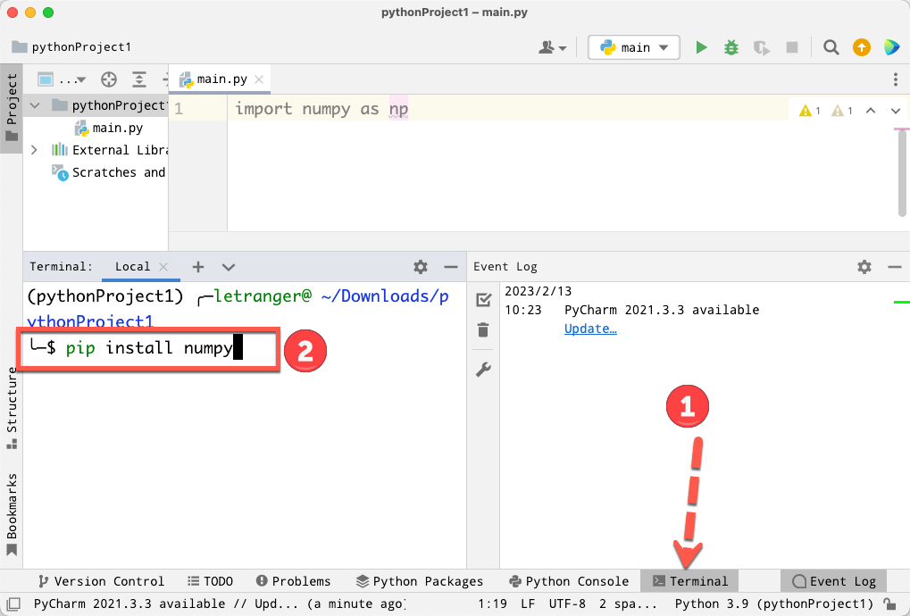
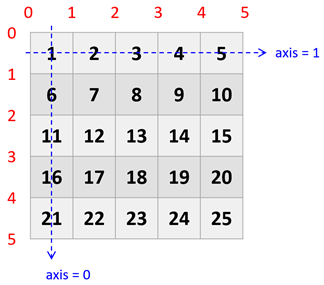
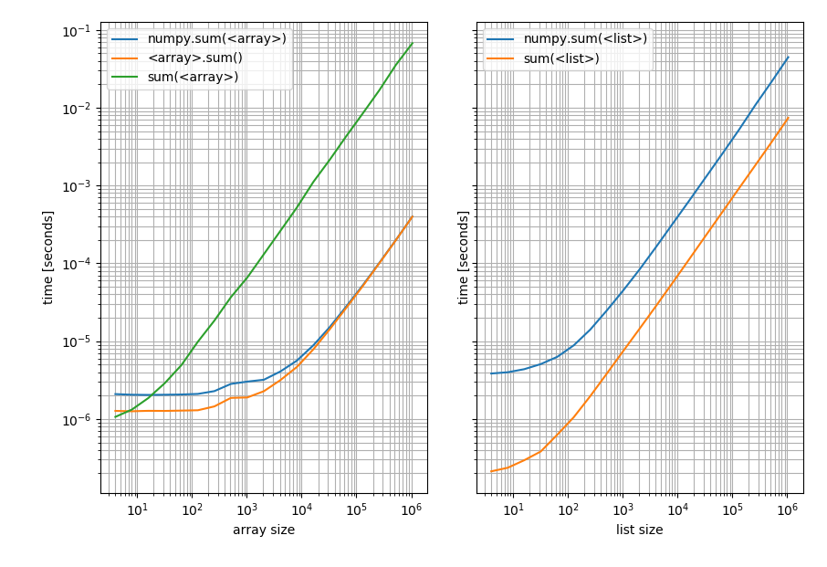

Numpy
TNFSH Python教材
Table of Contents

1. Numpy 是什麼？怎麼用？
1.1. Numpy 簡介
- NumPy 是 Python 語言的一個擴充程式庫。支援高階大量的維度陣列與矩陣運算，此外也針對陣列運算提供大量的數學函式函式庫。
- Numpy 主要用於資料處理上。Numpy 底層以 C 和 Fortran 語言實作，所以能快速操作多重維度的陣列。
- 當 Python 處理龐大資料時，其原生 list 效能表現並不理想（但可以動態存異質資料），而 Numpy 具備平行處理的能力，可以將操作動作一次套用在大型陣列上。
- Python 多數重量級的資料科學相關套件（例如：Pandas、SciPy、Scikit-learn 等）都幾乎是奠基在 Numpy 的基礎上。因此學會 Numpy 對於往後學習其他資料科學相關套件打好堅實的基礎。
- NumPy 的前身 Numeric 最早是由 Jim Hugunin 與其它協作者共同開發，2005 年，Travis Oliphant 在 Numeric 中結合了另一個同性質的程式庫 Numarray 的特色，並加入了其它擴充功能而開發了 NumPy。NumPy 為開放原始碼並且由許多協作者共同維護開發。1
- 延伸閱讀:
1.2. 使用 Numpy 模組
和所有其他的第三方模組一樣，使用 Numpy 前需要先安裝並匯入模組
1.2.1. 安裝
1: pip install numpy
PyCharm
如果你是使用 PyCharm，可以在 PyCharm 的 Terminal 視窗中執行上述安裝指令

Figure 1: PyCharm
Colab
如果你是使用 Colab，可以在 Colab 的程式碼區塊中執行安裝指令
1: !pip install numpy
1.2.2. 匯入
- 使用模組裡的函式要加模組名稱
import numpy
- 匯入 numpy 模組並使用 np 作為簡寫，這是 Numpy 官方倡導的寫法
import numpy as np
2. NumPy 陣列
NumPy 的核心資料結構是 ndarray (N-dimensional array)，也就是多維陣列。你可以把它當成是Python裡的二維清單(list)或矩陣(matrix)，但它更強大且高效能。
2.1. NDArray
- Numpy 中的一維 ndarray 稱為 vector(向量)
- Numpy 中的多維資料型別稱為 ndarray(陣列)
- Numpy 的重點在於陣列的操作，其所有功能特色都建築在同質且多重維度的 ndarray（N-dimensional array）上。
axis 0, axis 1, axis 2:
- 一維時 axis 0 為 x 軸
- 二維時 axis 0 為 y 軸

Figure 2: Axis in ndarray
- 一維時 axis 0 為 x 軸
2.2. 陣列? 矩陣?
在這裡我把 numpy 的 ndarray 稱為陣列而非矩陣，因為 numpy 裡另有一種 matrix(矩陣)的資料型態，二者的差異如下2
2.2.1. 結構與維度
- ndarray：ndarray 是 NumPy 的核心數據結構，它可以是多維數組，不局限於二維。可以是一維、二維、甚至更高維的數據結構。
- matrix：matrix 是一種專門為線性代數設計的二維數據結構。無論輸入的數據形狀如何，matrix 永遠是二維的。即使是一維向量，轉換為 matrix 後也會被視作一個二維矩陣。
2.2.2. 操作符行為差異
- ndarray：ndarray 的 * 操作符執行的是元素對應相乘（element-wise multiplication），這適用於所有數組維度。
- matrix：matrix 的 * 操作符執行的是矩陣乘法，即線性代數中的點積(dot)操作。
2.2.3. 示例
1: import numpy as np 2: 3: # 使用 ndarray 4: A = np.array([[1, 2], [3, 4]]) 5: B = np.array([[5, 6], [7, 8]]) 6: print('=== A ===') 7: print(A) 8: print('=== B ===') 9: print(B) 10: 11: print('=== A * B ===') 12: print(A * B) # 元素對應相乘 13: 14: # 使用 matrix 15: A_matrix = np.matrix([[1, 2], [3, 4]]) 16: B_matrix = np.matrix([[5, 6], [7, 8]]) 17: print('=== A_matrix * B_matrix ===') 18: print(A_matrix * B_matrix) # 矩陣乘法
2.3. 建立 ndarray
2.3.1. 一維陣列(vector)
先來看看最簡單的一維陣列(vector)的建立方式，基本上有兩種方式可以生成 ndarray
可以將 python 的 list 或 tuple 轉成 numpy ndarray
1: import numpy as np 2: np1 = np.array( [1, 2, 3, 4] ) 3: print(np1)
[1 2 3 4]
使用 np.arange( ) 方法
語法： np.arange([start,] stop[, step][, dtype]) ，類似 Python 的 range() ，但回傳 ndarray 且支援浮點數。
- start：起始值，預設為 0
- stop：結束值（不包含）
- step：間隔，預設為 1（可以是小數）
- dtype：指定回傳陣列的資料型別
1: import numpy as np 2: 3: np2 = np.arange(5) 4: print("=====np2=====") 5: print(np2) 6: np3 = np.arange(1, 4, 0.5) 7: print("=====np3=====") 8: print(np3)
=====np2===== [0 1 2 3 4] =====np3===== [1. 1.5 2. 2.5 3. 3.5]
np.arange() v.s. range()
這裡我們來比較一下 np.arange() 與 python 內建的 range() 函數有什麼不同：
- range()為 python 內建函數
- range() 回傳的是 range object，而 np.arange() 回傳的是 numpy.ndarray
- range()不支援 step 為小數，np.arange()支援 step 為小數
簡單的陣列運算
Numpy陣列最大的優勢在於它可以對整個陣列進行運算，而不需要使用迴圈逐一處理每個元素，這使得程式碼更簡潔且 執行效率更高 。
是的，它會快很多！因為 Numpy 在底層是用 C 語言實作的，能夠更有效率地處理大量資料運算。
1: import numpy as np 2: np1 = np.array([1, 2, 3]) 3: np2 = np.array([3, 4, 5]) 4: # 陣列相加 5: print(np1 + np2) # [4 6 8]
[4 6 8]
2.3.2. 二維陣列
接下來我們來看看二維陣列的建立方式，最簡單的方式就是直接把Python的二維清單(list of list)轉成 ndarray
在面對二維陣列時，我們通常會使用 row(列) 和 column(行) 來描述陣列的結構。在 NumPy 中，二維陣列的第一個維度代表 row，而第二個維度代表 column。
1: import numpy as np 2: np4 = np.array( [[1, 2, 4], [3, 4, 5]] ) 3: # 查看整個陣列 4: print(np4) 5: # 查看陣列的形狀(shape)與內容 6: print("shape:", np4.shape) 7: print("np4:\n", np4) 8: # 取出第0列(row)與第0行(column) 9: print("取出第0列(row):",np4[0]) 10: print("取出第0行(column):",np4[:, 0])
[[1 2 4] [3 4 5]] shape: (2, 3) np4: [[1 2 4] [3 4 5]] 取出第0列(row): [1 2 4] 取出第0行(column): [1 3]
2.3.3. 陣列形狀(Shape)的自由轉換
在處理多維陣列時，經常需要改變陣列的形狀以符合不同的運算需求。NumPy 提供了 reshape() 方法來實現這一功能。以下範例展示如何將一個一維陣列轉換為三維陣列：
1: import numpy as np 2: np7 = np.arange(24) 3: print('原始 np7:\n',np7) 4: 5: # 重塑為 2x3x4 的三維陣列 6: np7 = np.arange(24).reshape(2, 3, 4) 7: print('np7:\n',np7) 8: 9: # 重塑為 2x3x4 的三維陣列，元素為奇數 10: np8 = np.arange(13, 60, 2).reshape(2, 3, 4) 11: print("np8:\n", np8) 12: print(np8.ndim, np8.shape, np8.dtype)
原始 np7: [ 0 1 2 3 4 5 6 7 8 9 10 11 12 13 14 15 16 17 18 19 20 21 22 23] np7: [[[ 0 1 2 3] [ 4 5 6 7] [ 8 9 10 11]] [[12 13 14 15] [16 17 18 19] [20 21 22 23]]] np8: [[[13 15 17 19] [21 23 25 27] [29 31 33 35]] [[37 39 41 43] [45 47 49 51] [53 55 57 59]]] 3 (2, 3, 4) int64
2.3.4. 隨機陣列
有些時候我們需要產生隨機數據來模擬資料或進行測試，例如：
- 模擬測試資料
- 初始化神經網路的權重(這個在人工智慧的程式實作中很常見)
- 隨機抽樣
Numpy 提供了多種方法來生成隨機陣列，以下介紹幾種常用的方法
numpy.random.randint()
顧名思義，這個函式是用來產生 隨機整數 的陣列
- 語法：numpy.random.randint(low, high=None, size=None, dtype='l')
- 函式的作用是，傳回一個隨機整型數，範圍從低（包括）到高（不包括），即[low, high)。
- 如果沒有寫引數 high 的值，則返回[0,low)的值。
1: import numpy as np 2: np.random.seed(0) 3: 4: x1 = np.random.randint(10, size=6) 5: x2 = np.random.randint(10, size=(3,4)) 6: x3 = np.random.randint(10, size=(3,4,5)) 7: print(x1) 8: print(x2) 9: print(x3)
[5 0 3 3 7 9] [[3 5 2 4] [7 6 8 8] [1 6 7 7]] [[[8 1 5 9 8] [9 4 3 0 3] [5 0 2 3 8] [1 3 3 3 7]] [[0 1 9 9 0] [4 7 3 2 7] [2 0 0 4 5] [5 6 8 4 1]] [[4 9 8 1 1] [7 9 9 3 6] [7 2 0 3 5] [9 4 4 6 4]]]
numpy.random.rand()
如果你需要產生 隨機浮點數 的陣列，可以使用 numpy.random.rand() 函式，它會產生在 [0.0, 1.0) 範圍內的均勻分布隨機浮點數。
- 範例
1: import numpy as np 2: 3: np.random.seed(9627) #設置相同變數，每次生成相同亂數 4: np8 = np.random.random((3, 2)) #陣列大小以tuple表示 5: print('np8:\n', np8) 6: # 四個人擲骰子，每人擲兩次 7: np9 = np.random.randint(1, 7, size=[4, 2]) #陣列大小以list表示 8: print('np9:\n', np9)
np8: [[0.7263954 0.71063088] [0.07725825 0.11562424] [0.57923875 0.85345365]] np9: [[5 6] [2 2] [5 5] [5 2]]
2.3.5. 0/1 陣列
有些時候我們需要建立全為 0 或全為 1 的陣列，Numpy 提供了 np.zeros() 和 np.ones() 兩個函式來達成這個目的
np.zeros: np.zeros( (陣列各維度大小用逗號區分) )：建立全為 0 的陣列，可以小括號定義陣列的各個維度的大小
1: import numpy as np 2: 3: zeros = np.zeros( (3, 5) ) 4: print("zeros=>\n{0}".format(zeros))
zeros=> [[0. 0. 0. 0. 0.] [0. 0. 0. 0. 0.] [0. 0. 0. 0. 0.]]
np.ones: np.ones( (陣列各維度大小用逗號區分) )：用法與 np.zeros 一樣
1: import numpy as np 2: 3: ones = np.ones( (4, 3) ) 4: print("ones=>\n{0}".format(ones))
ones=> [[1. 1. 1.] [1. 1. 1.] [1. 1. 1.] [1. 1. 1.]]
2.4. 匯入/匯出
程式是用來處理資料的，而資料通常是存放在檔案中，有時我們要從電腦裡讀取原始資料用Numpy來分析運算，在處理完畢後，還要將結果存回檔案中。因此 Numpy 提供了方便的函式來進行資料的匯入與匯出
2.4.1. 將 ndarray 內容匯出到檔案
- Numpy支援多種檔案格式的匯出，其中兩種大家比較熟悉的格式是 csv與txt，
- 至於.npy是 Numpy 自有的二進位格式，適合用來儲存大型陣列資料，這種檔案格式可以保留陣列的形狀與資料型態，讀取速度也較快。但你只能用 Numpy 來讀取這種格式的檔案，無法用記事本等文字編輯器來查看內容(不信你可以試試看)。
以下是把處理後的 ndarray 內容匯出到不同格式檔案的範例
1: import numpy as np 2: ary = np.random.randint(10, size=(3,4)) 3: print(ary) 4: np.save('ndarray', ary) 5: np.savetxt('ndarray.txt', ary) 6: np.savetxt('ndarray.csv', ary, delimiter=',')
[[2 7 3 8] [3 7 9 0] [5 4 2 6]]
1: ls ndarray* 2: cat ndarray.npy 3: cat ndarray.txt 4: cat ndarray.csv
2.4.2. 將資料由檔案匯入 ndarray
- 將資料由檔案匯入 ndarray 也很簡單，分別使用 np.load() 與 np.loadtxt() 函式來讀取不同格式的檔案
1: import numpy as np 2: ary1 = np.load('ndarray.npy') 3: print(ary1) 4: ary2 = np.loadtxt('ndarray.txt') 5: print(ary2) 6: ary3 = np.loadtxt('ndarray.csv', delimiter=',') 7: print(ary3)
[[2 7 3 8] [3 7 9 0] [5 4 2 6]] [[2. 7. 3. 8.] [3. 7. 9. 0.] [5. 4. 2. 6.]] [[2. 7. 3. 8.] [3. 7. 9. 0.] [5. 4. 2. 6.]]
2.5. [課堂練習]陣列生成 TNFSH
隨機產生一組 10*5 個 0~100 的陣列，模擬成一個班級的某次考試成績(10 人*5 科)。
2.6. 自行研究
請自行 google 以下 numpy 的函數用法
- eye()
- diag()
- tile()
1: # 引入 numpy 模組 2: import numpy as np 3: 4: # create identity matrix 5: ary1 = np.eye(3) 6: print(ary1) 7: 8: # create diagonal array 9: ary2 = np.diag((2,1,4,6)) 10: print(ary2) 11: # 12: ary3 = np.array([range(i, i+3) for i in [2,4,6]]) 13: print(ary3) 14: 15: # tile 16: ary4 = np.array([0,1,2]) 17: print(np.tile(ary4,2)) 18: print(np.tile(ary4,(2,2))) 19: ary5 = np.array([[1,2],[6,7]]) 20: print(np.tile(ary5,3)) 21: print(np.tile(ary5,(2,2)))
[[1. 0. 0.] [0. 1. 0.] [0. 0. 1.]] [[2 0 0 0] [0 1 0 0] [0 0 4 0] [0 0 0 6]] [[2 3 4] [4 5 6] [6 7 8]] [0 1 2 0 1 2] [[0 1 2 0 1 2] [0 1 2 0 1 2]] [[1 2 1 2 1 2] [6 7 6 7 6 7]] [[1 2 1 2] [6 7 6 7] [1 2 1 2] [6 7 6 7]]
3. 陣列運算效能比較
這個例子只是讓大家體會 Numpy 陣列運算的效能優勢，實際上在處理大型資料時，Numpy 的效能優勢會更明顯
3.1. Numpy 計算時間比較
自行比較以下兩個版本的執行時間
3.1.1. PyCharm
於 PyCharm 環境中計算時間的方式
import timeit print(timeit.timeit(stmt='import numpy as np;x = np.arange(100);x**3')) print(timeit.timeit(stmt='for i in range(100): a=i**3'))
0.8354589159716852 3.117140957969241
3.1.2. Colab
於 Colab 環境中計算時間的方式
1: %timeit [i**3 for i in range(1000)]
1: import numpy as np 2: ar = np.arange(1000) 3: %timeit ar**3
4. 陣列走訪(traversal)
不論你在學習哪一種資料結構，走訪(traversal)都是一個重要的概念。走訪是指依序訪問資料結構中的每一個元素。在 Numpy 中，走訪陣列的方式有很多種，以下介紹幾種常見的方法
4.1. vector 走訪
這個其實就和我們在 Python 中走訪 list 差不多
1: import numpy as np 2: arr = np.array([10, 20, 30, 40, 50]) 3: # 遍歷、輸出每個元素 4: for elem in arr: 5: print(elem)
10 20 30 40 50
4.2. 二維陣列走訪
在走訪二維陣列時，我們可以使用多種方法來達成，以下介紹幾種常見的方法
4.2.1. nested for loop
1: import numpy as np 2: 3: arr2d = np.array([[1, 2, 3], [4, 5, 6], [7, 8, 9]]) 4: # 遍歷每一行 5: for row in arr2d: 6: print("Row:", row) 7: 8: # 遍歷行中的每個元素 9: for elem in row: 10: print(elem)
4.2.2. nditer
這種走訪就是比較 Numpy 風格的寫法，它的好處是可以只用一個迴圈就可以走訪整個陣列，不管這個陣列是幾維的
1: import numpy as np 2: 3: arr2d = np.array([[1, 2, 3], [4, 5, 6], [7, 8, 9]]) 4: for elem in np.nditer(arr2d): 5: print(elem)
1 2 3 4 5 6 7 8 9
4.2.3. 走訪過程中取得 index
在某些情況下，我們在走訪陣列時，除了需要元素的值外，還需要知道該元素在陣列中的位置(index)。以下介紹兩種常見的方法來達成這個目的
常見的做法
1: import numpy as np 2: 3: arr2d = np.array([[1, 2, 3], [4, 5, 6], [7, 8, 9]]) 4: 5: for i in range(len(arr2d)): 6: for j in range(len(arr2d[i])): 7: print(f"Index ({i}, {j}) - Value: {arr2d[i, j]}")
Index (0, 0) - Value: 1 Index (0, 1) - Value: 2 Index (0, 2) - Value: 3 Index (1, 0) - Value: 4 Index (1, 1) - Value: 5 Index (1, 2) - Value: 6 Index (2, 0) - Value: 7 Index (2, 1) - Value: 8 Index (2, 2) - Value: 9
使用 ndenumerate 獲取索引
這是另一種比較 Numpy 風格的寫法，使用 np.ndenumerate() 函式可以同時獲取元素的索引和值
這裡的 np.ndenumerate() 函式會傳回一個迭代器，該迭代器在每次迭代時會產生一個包含索引和值的元組(tuple)。索引本身也是一個元組，表示元素在多維陣列中的位置
1: import numpy as np 2: 3: arr2d = np.array([[1, 2, 3], [4, 5, 6], [7, 8, 9]]) 4: 5: for index, elem in np.ndenumerate(arr2d): 6: print(f"Index: {index} - Value: {elem}")
Index: (0, 0) - Value: 1 Index: (0, 1) - Value: 2 Index: (0, 2) - Value: 3 Index: (1, 0) - Value: 4 Index: (1, 1) - Value: 5 Index: (1, 2) - Value: 6 Index: (2, 0) - Value: 7 Index: (2, 1) - Value: 8 Index: (2, 2) - Value: 9
4.3. [課堂練習]成績模擬 TNFSH
- 隨機產生一組 10*5 的成績陣列(20 <= 分數 <= 99)
- 以 for 迴圈以如下格式輸出結果，最前面加上學號(從 1 號開始編號)，各成績間以 tab 相隔對齊
說明: 為了確保大家在使用 numpy 隨機生成分數時能產生相同的結果，請在你的程式碼中加入這段程式。
1: import numpy as np 2: 3: np.random.seed(9627) #設置相同變數，每次生成相同亂數 4:
輸出結果範例
1: 73 91 28 43 74 2: 98 36 32 55 89 3: 52 60 51 25 34 4: 88 89 64 82 99 5: 83 47 69 27 32 6: 93 22 91 29 20 7: 64 22 32 85 89 8: 20 25 98 61 48 9: 98 32 61 69 78 10: 39 42 55 90 98
4.4. 陣列維度與形狀的轉換
當你的程式中已經存在 ndarray 時，Numpy 提供了許多方便的函式來進行陣列運算，這些函式可以讓你輕鬆地對整個陣列進行數學運算，而不需要使用迴圈逐一處理每個元素。以下介紹幾種常見的陣列運算
4.4.1. 陣列變形:reshape()
- reshape()
- transpose()
reshape
reshape() 可以用來改變陣列的形狀，而不改變陣列的元素。這在處理高維數據時非常有用。以下範例將一個一維陣列重新塑造成一個 2x4 的二維陣列：
語法： ndarray.reshape(shape) 或 np.reshape(a, newshape)
- shape 中可用
-1讓 NumPy 自動計算該維度大小，例如a.reshape(2, -1)表示「2 列，行數自動算」 - 元素總數必須跟原陣列相同，否則會報錯
1: import numpy as np 2: x = np.arange(2,10) 3: print(x.reshape(2,4))
[[2 3 4 5] [6 7 8 9]]
攤平與轉置（Flattening and Transpose）
在進行多維陣列操作時，常常需要將陣列攤平（即轉換為一維陣列, 常見於 AI 模型輸出層之前）或將陣列的行與列進行互換。NumPy 提供了兩個強大的方法來實現這些操作，分別是 ravel() 和 transpose()。
ndarray.ravel([order]) — 將多維陣列攤平為 1D 陣列：
- order='C'（預設）：row-major，先走行方向（就是一列一列讀）
- order='F'：column-major，先走列方向（就是一行一行讀）
- 跟
flatten()的差別：ravel() 盡量回傳 view（不複製資料，比較快），flatten() 一定回傳 copy
1: import numpy as np 2: ac = np.array([np.arange(1,6),np.arange(10,15)]) 3: print(ac) 4: print(ac.ravel()) # row first 5: print(np.ravel(ac)) 6: print(ac.ravel('F')) #column first 7: print(np.ravel(ac, 'F')) 8: print(ac.T)
[[ 1 2 3 4 5] [10 11 12 13 14]] [ 1 2 3 4 5 10 11 12 13 14] [ 1 2 3 4 5 10 11 12 13 14] [ 1 10 2 11 3 12 4 13 5 14] [ 1 10 2 11 3 12 4 13 5 14] [[ 1 10] [ 2 11] [ 3 12] [ 4 13] [ 5 14]]
新增維度（Add a dimension）
在將資料丟入 AI 模型訓練前，有時我們需要在陣列中添加新的維度以配合模型的輸入要求。使用 np.newaxis 可以在指定的位置新增一個維度。
np.newaxis 其實就等同於 None ，用來幫陣列多加一個維度：
a[np.newaxis, :]— 將 1D 陣列轉為 row vector，shape 從(n,)變成(1, n)a[:, np.newaxis]— 將 1D 陣列轉為 column vector，shape 從(n,)變成(n, 1)
1: import numpy as np 2: ar = np.array([14,15,16]) 3: print(ar) 4: print(ar.shape) 5: 6: ar = ar[:,np.newaxis] ## 新增一個維度，變為 (3, 1) 7: print(ar.shape) 8: print(ar)
[14 15 16] (3,) (3, 1) [[14] [15] [16]]
4.5. 索引/切片
4.5.1. 索引(Indexing)、切片(Slicing)
這部份和Python的 list 索引、切片用法很像，但多了很多功能
索引(Indexing)的用途不外乎就是為了要從陣列和陣列中取值，但除此之外有很多種功能！可以取出連續區間，還可以間隔取值！3
基本索引
ndarray 可以通過類似 Python 列表的方式進行索引。例如，對一個一維陣列可以通過下標來獲取元素：
1: import numpy as np 2: 3: # 創建一個一維數組 4: arr = np.array([10, 20, 30, 40, 50]) 5: 6: # 取出第一個元素 7: print(arr[0]) # 輸出 10 8: 9: # 取出最後一個元素 10: print(arr[-1]) # 輸出 50
對於多維數組，可以使用逗號分隔不同維度的索引：
1: import numpy as np 2: # 創建一個二維數組 3: arr2d = np.array([[1, 2, 3], [4, 5, 6], [7, 8, 9]]) 4: 5: # 取出第一行第二列的元素 6: print(arr2d[0, 1]) # 輸出 2 7: 8: # 取出最後一行最後一列的元素 9: print(arr2d[-1, -1]) # 輸出 9
切片
與 Python 列表類似，ndarray 也可以通過切片來提取數組的子集。切片的語法:
ndarray[start:stop:step]
，其中：
- start 是切片的起始索引（包含）。
- stop 是切片的結束索引（不包含）。
- step 是切片的步長（默認為 1）。
- 一維切片
1: import numpy as np 2: arr = np.array([10, 20, 30, 40, 50]) 3: # 提取從第二個到第四個元素 4: print(arr[1:4]) # 輸出 [20 30 40] 5: # 每隔一個元素提取 6: print(arr[::2]) # 輸出 [10 30 50]
- 二維切片
1: import numpy as np 2: arr2d = np.array([[1, 2, 3], [4, 5, 6], [7, 8, 9]]) 3: # 提取前兩行的前兩列 4: print(arr2d[:2, :2]) # 輸出 [[1 2] 5: # 提取第二列 6: print(arr2d[:, 1]) # 輸出 [2 5 8] 7: # 提取最後一行 8: print(arr2d[-1, :]) # 輸出 [7 8 9]
- 條件切片
在篩選符合條件的元素時非常有用
1: import numpy as np 2: arr = np.array([10, 20, 30, 40, 50]) 3: 4: # 找出所有大於30的元素 5: print(arr[arr > 30]) # 輸出 [40 50]
4.5.2. 取出特定行列、特定範圍
- 取出第 x 列: Ary[x]
- 取出第 x 行: Ary[:,x]
- 取出第 x_{1}~x_{2}列、第 y_{1}~y_{2}行的範圍: Ary[x_{1}:x_{2} + 1, y_{1}:y_{2} + 1]
1: import numpy as np 2: a = np.arange(12).reshape(3, 4) 3: print(a) 4: print(a[1]) 5: print(a[:,1]) 6: print(a[1:3, 1:3])
[[ 0 1 2 3] [ 4 5 6 7] [ 8 9 10 11]] [4 5 6 7] [1 5 9] [[ 5 6] [ 9 10]]
4.5.3. 刪除列/行
語法： np.delete(arr, obj, axis=None)
- arr：要操作的陣列
- obj：要刪除的索引（可以是整數、slice 或陣列）
- axis=0 刪除列(row)、axis=1 刪除行(column)
- axis=None（預設）時會先把陣列攤平（flatten）再刪除指定位置的元素
- 注意：np.delete() 不會修改原本的陣列，而是傳回一個新的陣列。
1: import numpy as np 2: 3: a = np.arange(12).reshape(3, 4) 4: print(a) 5: a_delRow1 = np.delete(a, 1, 0) # axis=0，刪除第 1 列(row) 6: print('刪除第1列(row)') 7: print(a_delRow1) 8: a_delCol1 = np.delete(a, 1, 1) # axis=1，刪除第 1 行(column) 9: print('刪除第1行(column)') 10: print(a_delCol1) 11: print('原本的 a 不受影響') 12: print(a)
[[ 0 1 2 3] [ 4 5 6 7] [ 8 9 10 11]] 刪除第1列(row) [[ 0 1 2 3] [ 8 9 10 11]] 刪除第1行(column) [[ 0 2 3] [ 4 6 7] [ 8 10 11]] 原本的 a 不受影響 [[ 0 1 2 3] [ 4 5 6 7] [ 8 9 10 11]]
4.6. [課堂練習]便利商店庫存查詢(index/slice) TNFSH
某連鎖便利商店有 4 間分店（站前店、公園店、學府店、車站店），販售 5 種熱銷商品（御飯糰、茶葉蛋、關東煮、咖啡、三明治）。請用 NumPy 的索引與切片完成庫存查詢任務。
指定 seed：
1: import numpy as np 2: np.random.seed(7788) 3: 4: products = ['御飯糰', '茶葉蛋', '關東煮', '咖啡', '三明治'] 5: stores = ['站前店', '公園店', '學府店', '車站店'] 6: inventory = np.random.randint(0, 50, size=(4, 5))
任務：
- 取出學府店（第 3 列）的所有商品庫存
- 取出所有分店的咖啡（第 4 行）庫存
- 取出公園店與學府店的關東煮、咖啡庫存（2×2 子陣列）
- 找出庫存不足 10 的品項（用 np.where），列出是哪間店的哪個商品
結果範例
=== 庫存表 === 商品: ['御飯糰', '茶葉蛋', '關東煮', '咖啡', '三明治'] 分店: ['站前店', '公園店', '學府店', '車站店'] [[47 1 37 46 32] [ 8 46 15 44 12] [15 12 33 10 41] [43 38 41 9 40]] 1. 學府店的所有商品庫存: [15 12 33 10 41] 2. 各店咖啡庫存: [46 44 10 9] 3. 公園店與學府店的關東煮、咖啡庫存: [[15 44] [33 10]] 4. 庫存不足 10 的品項: 站前店 的 茶葉蛋 只剩 1 個 公園店 的 御飯糰 只剩 8 個 車站店 的 咖啡 只剩 9 個
4.7. 陣列運算
4.7.1. 基礎運算
維度相同的陣列相加、減
1: import numpy as np 2: a = np.array( [6, 7, 8, 9] ) 3: b = np.arange( 4 ) 4: c = a - b 5: print(f'a=>{a}') 6: print(f'b=>{b}') 7: print(f'c=>{c}')
a=>[6 7 8 9] b=>[0 1 2 3] c=>[6 6 6 6]
陣列與常數運算
這是很有趣的功能，Numpy 允許我們直接對整個陣列進行加、減、乘、除等運算，而不需要使用迴圈逐一處理每個元素。這種操作稱為「廣播」（broadcasting），它使得陣列運算變得非常簡單且高效。
1: import numpy as np 2: import math 3: a = np.random.randint(100, size=(2, 4)) #陣列大小以tuple表示 4: 5: b = a + 10 6: c = a**2 7: print(f'a=>{a}') 8: print(f'b=>{b}') 9: print(f'c=>{c}')
a=>[[54 65 64 95] [31 65 5 15]] b=>[[ 64 75 74 105] [ 41 75 15 25]] c=>[[2916 4225 4096 9025] [ 961 4225 25 225]]
4.7.2. 陣列轉置
\[a=\begin{bmatrix}1&0\\2&3\end{bmatrix}, a^T=\begin{bmatrix}1&2\\0&3\end{bmatrix}\]
1: import numpy as np 2: a = np.array([[1, 0], 3: [2, 3]]) 4: print(a) 5: print('--Matrix transpose--') 6: print(a.transpose())
[[1 0] [2 3]] --Matrix transpose-- [[1 2] [0 3]]
4.7.3. 陣列相乘
陣列乘法(dot)
\[a=\begin{bmatrix}a_{11}&a_{12}\\a_{21}&a_{22}\end{bmatrix}, b=\begin{bmatrix}b_{11}&b_{12}&b_{13}\\b_{21}&b_{22}&b_{23}\end{bmatrix}\]
\[a \cdot b=\begin{bmatrix}a_{11}*b_{11}+a_{12}*b_{21}&a_{11}*b_{12}+a_{12}*b_{22}&a_{11}*b_{13}+a_{12}*b_{23}\\a_{21}*b_{11}+a_{22}*b_{21}&a_{21}*b_{12}+a_{22}*b_{22}&a_{21}*b_{13}+a_{22}*b_{23}\end{bmatrix}\]
1: import numpy as np 2: A = np.array([[1, 2, 3], [4, 3, 2]]) 3: B = np.array([[1, 2], [2, 0], [3, -1]]) 4: print("{0}".format(A.dot(B))) 5: # 另一種做法 6: aMatrix = np.matrix(A) 7: bMatrix = np.matrix(B) 8: print('=== Solution #2 ===') 9: print(aMatrix * bMatrix)
[[14 -1] [16 6]] === Solution #2 === [[14 -1] [16 6]]
相對位置乘法
\[a=\begin{bmatrix}a_{11}&a_{12}\\a_{21}&a_{22}\end{bmatrix}, b=\begin{bmatrix}b_{11}&b_{12}\\b_{21}&b_{22}\end{bmatrix}\]
\[a \cdot b=\begin{bmatrix}a_{11}*b_{11}&a_{12}*b_{12}\\a_{21}*b_{21}&a_{22}*b_{22}\end{bmatrix}\]
1: import numpy as np 2: A = np.array([[1, 2], [4, 5]]) 3: B = np.array([[7, 8], [9, 10]]) 4: print("A:\n{0}".format(A)) 5: print("B:\n{0}".format(B)) 6: print("A*B:\n{0}".format(A*B))
A: [[1 2] [4 5]] B: [[ 7 8] [ 9 10]] A*B: [[ 7 16] [36 50]]
4.7.4. 取代陣列中元素
這裡也可以看出 NumPy 對於選取陣列中元素的極好彈性，可十分方便的完成以下工作:
- 直接以條件來當成選取方式
- 直接以條件來修改陣列內容，例如，30 以下的分數都改成 40 分
1: import numpy as np 2: 3: C = np.array([5, -1, 3, 9, 0]) 4: print(C<=0) 5: # 將陣列中小於等於0的元素取代為0;其他轉為1 6: C[C<=0] = 0 7: C[C>0] = 1 8: print(C)
[False True False False True] [1 0 1 1 0]
4.7.5. 陣列間元素相乘
1: import numpy as np 2: ar = np.arange(1,5) 3: print(ar.prod()) 4: 5: ar1 = np.array([np.arange(1,4),np.arange(4,7),np.arange(7,10)]) 6: print(ar1) 7: print(np.prod(ar1, axis=1)) 8: print(ar1.sum()) 9: print(ar1.mean()) 10: print(np.median(ar1))
24 [[1 2 3] [4 5 6] [7 8 9]] [ 6 120 504] 45 5.0 5.0
4.7.6. 反陣列
AB=BA=I, 其中 I 為單位陣列
1: import numpy as np 2: 3: A = np.array([[4, -7], [2, -3]]) 4: print("A:\n", A) 5: B = np.linalg.inv(A) 6: print("B:\n", B) 7: print("A dot B:\n", A.dot(B))
A: [[ 4 -7] [ 2 -3]] B: [[-1.5 3.5] [-1. 2. ]] A dot B: [[1. 0.] [0. 1.]]
4.7.7. 合併陣列
vstack
1: import numpy as np 2: a = np.ones((2, 2)) 3: b = np.zeros(2) 4: print(a) 5: print(b) 6: c = np.vstack((a, b)) 7: print(c)
[[1. 1.] [1. 1.]] [0. 0.] [[1. 1.] [1. 1.] [0. 0.]]
hstack
1: import numpy as np 2: a = np.ones((2, 2)) 3: b = [[3], 4: [4]] 5: print(a) 6: print(b) 7: c = np.hstack((a, b)) 8: print(c) 9:
[[1. 1.] [1. 1.]] [[3], [4]] [[1. 1. 3.] [1. 1. 4.]]
4.8. [課堂練習]全班BMI大調查(陣列運算) TNFSH
給定全班 10 位同學的身高(cm)和體重(kg)，請用 NumPy 的陣列運算（不使用迴圈計算）算出每位同學的 BMI 值。
BMI 公式：BMI = 體重(kg) ÷ 身高(m)²
指定 seed：
1: import numpy as np 2: np.random.seed(5566) 3: 4: heights = np.random.randint(155, 185, size=10) # 身高 cm 5: weights = np.random.randint(45, 85, size=10) # 體重 kg
任務：
- 將身高從 cm 轉換為 m（除以 100）
- 用陣列運算計算所有人的 BMI（取到小數第 1 位）
- 輸出每位同學的 BMI
- 統計：平均 BMI、最高/最低 BMI 是誰、超過 25（過重）的人數
結果範例
=== 全班身高體重表 === 身高(cm): [164 183 184 162 183 166 178 183 165 158] 體重(kg): [57 56 76 61 45 65 78 79 53 74] === BMI 計算結果 === 同學 1: 身高 164cm, 體重 57kg, BMI = 21.2 同學 2: 身高 183cm, 體重 56kg, BMI = 16.7 同學 3: 身高 184cm, 體重 76kg, BMI = 22.4 同學 4: 身高 162cm, 體重 61kg, BMI = 23.2 同學 5: 身高 183cm, 體重 45kg, BMI = 13.4 同學 6: 身高 166cm, 體重 65kg, BMI = 23.6 同學 7: 身高 178cm, 體重 78kg, BMI = 24.6 同學 8: 身高 183cm, 體重 79kg, BMI = 23.6 同學 9: 身高 165cm, 體重 53kg, BMI = 19.5 同學10: 身高 158cm, 體重 74kg, BMI = 29.6 === 統計資訊 === 全班平均 BMI: 21.8 BMI 最高: 同學10 (29.6) BMI 最低: 同學5 (13.4) BMI 超過 25 (過重) 的人數: 1 人
4.9. [課堂練習]分數修改 TNFSH
- 模擬一個 10 人、5科的全班月考成績(隨機生成, 0~100)
- 將所有 55<=分數<60 的成績均改為 60 分
- 將所有低於 40 分的成績均改為 10 分
5. 陣列函數
NumPy 提供了一系列用於計算陣列內數據的統計值的函數，如 min()、max()、mean()、std()（標準差）、var()（變異數）等。更多的 Numpy function 請參閱Numpy官方網站。
5.1. numpy.sum()
5.1.1. 語法
numpy.sum(a, axis=None, dtype=None, out=None, keepdims=<no value>, initial=<no value>, where=<no value>)
其他參數用法詳見官方網站
5.1.2. 範例
1: import numpy as np 2: 3: np_array_2x3 = np.array([[0,2,4],[1,3,5]]) 4: print('=====Array=====') 5: print(np_array_2x3) 6: print('=====列=====') 7: print(np.sum(np_array_2x3, axis = 0)) 8: print('=====行=====') 9: print(np.sum(np_array_2x3, axis = 1)) 10: print('=====陣列總和1=====') 11: print(np.sum(np_array_2x3)) 12: print('=====陣列總和2=====') 13: print(np_array_2x3.sum()) 14:
=====Array===== [[0 2 4] [1 3 5]] =====列===== [1 5 9] =====行===== [6 9] =====陣列===== 15 =====陣列===== 15
5.2. sum() v.s. np.sum()
sum() 是 Python 的內建函數，而 np.sum() 是 NumPy 的函數。這兩者有些差異，特別是在多維數組中的操作方式不同。
- sum() 主要用於對 Python 的序列進行求和。
- np.sum() 支援多維陣列，可以指定 axis 來沿著某一維度進行求和。

Figure 3: sum() v.s. np.sum()
5.3. 其他常用函數
以下列出幾個常用的統計/數學函數，這些函數大多可以透過 axis 參數指定沿哪個維度運算：
| 函數 | 功能 | 範例 |
|---|---|---|
| np.min() | 最小值 | np.min(arr, axis=0) |
| np.max() | 最大值 | np.max(arr, axis=0) |
| np.argmin() | 最小值的索引 | np.argmin(arr) |
| np.argmax() | 最大值的索引 | np.argmax(arr) |
| np.mean() | 平均值 | np.mean(arr, axis=1) |
| np.std() | 標準差 | np.std(arr) |
| np.var() | 變異數 | np.var(arr) |
| np.sqrt() | 開根號 | np.sqrt(arr) |
| arr.size | 元素個數 | arr.size |
| arr.dtype | 資料型態 | arr.dtype |
| arr.itemsize | 單一元素大小(bytes) | arr.itemsize |
1: import numpy as np 2: 3: np1 = np.random.randint(0, 10, size=[3, 2]) 4: print("np\n", np1) 5: print("np1.sum", np1.sum()) 6: print("sum:", sum(np1)) 7: print("sum:", sum(np1,3)) 8: print("min:", np1.min()) 9: print("max:", np1.max()) 10: print("mean:", np.mean(np1))
np [[3 7] [4 1] [6 8]] np1.sum 29 sum: [13 16] sum: [16 19] min: 1 max: 8 mean: 4.833333333333333
5.3.1. numpy.sum()
numpy.sum() 用來求出陣列的總和，可以沿著指定的維度（行或列）進行操作。你可以對整個陣列求和，或沿著某個軸方向（行或列）進行求和操作。
語法
numpy.sum(a, axis=None, dtype=None, out=None, keepdims=False, initial=<no value>, where=True)
- a：要進行求和的陣列或數組。
- axis：選擇沿著哪個軸進行求和，預設值為 None，即對所有元素進行求和。如果設置為 0，則沿著列進行求和；如果設置為 1，則沿著行進行求和。
- dtype：輸出陣列的資料型態，可選。如果未指定，使用輸入陣列的資料型態。
- out：可以指定一個與 a 相同形狀的陣列來存儲結果。
- keepdims：如果設置為 True，則保留被壓縮的維度，使結果與輸入形狀一致（但值變為 1）。
- initial：指定求和的初始值。
- where：允許在特定條件下進行求和，預設為 True。
範例
1: import numpy as np 2: 3: ary = np.array([[9, 2, 8], [4, 7, 5]]) 4: print('=====Array=====') 5: print(ary) 6: 7: # 沿著列方向（axis=0）求和 8: print('=====列求和=====') 9: print(np.sum(ary, axis=0)) 10: 11: # 沿著行方向（axis=1）求和 12: print('=====行求和=====') 13: print(np.sum(ary, axis=1)) 14: 15: # 求整個陣列的總和 16: print('=====總和=====') 17: print(np.sum(ary))
=====Array===== [[9 2 8] [4 7 5]] =====列求和===== [13 9 13] =====行求和===== [19 16] =====總和===== 35
5.3.2. numpy.max()
numpy.max() 用來求出陣列的最大值，可以沿著指定的維度（行或列）進行操作。
語法
numpy.max(a, axis=None, out=None, keepdims=False)
- 求序列的最值
- 最少接收一個引數
- axis：預設為 None，表示對整個陣列（攤平後）取最大值；axis=0 為列向的最值，axis=1 為行方向的最值；
範例
1: import numpy as np 2: 3: ary = np.array([[9,2,8],[4,7,5]]) 4: print('=====Array=====') 5: print(ary) 6: print('=====列=====') 7: print(np.max(ary, axis = 0)) 8: print('=====行=====') 9: print(np.max(ary, axis = 1)) 10: print('=====陣列=====') 11: print(np.max(ary))
=====Array===== [[9 2 8] [4 7 5]] =====列===== [9 7 8] =====行===== [9 7] =====陣列===== 9
5.3.3. numpy.maximum()
numpy.maximum() 用於比較兩個陣列中逐位元素，並回傳每個位置較大的值。
語法
numpy.maximum(X, Y, out=None)
- X 與 Y 逐位比較取其大者；
- 最少接收兩個引數
範例
1: import numpy as np 2: npA1 = np.array([[9,-9,8],[4,7,5]]) 3: npA2 = np.array([[0,1,8],[10,-7,5]]) 4: print("=====npA1=====") 5: print(npA1) 6: print("=====npA2=====") 7: print(npA2) 8: print("=====maximum=====") 9: print(np.maximum(npA1, npA2))
=====npA1===== [[ 9 -9 8] [ 4 7 5]] =====npA2===== [[ 0 1 8] [10 -7 5]] =====maximum===== [[ 9 1 8] [10 7 5]]
5.3.4. numpy.argmax()
numpy.argmax() 傳回陣列中最大值的索引。可沿著指定的維度查詢最大值索引。
語法
numpy.argmax(a, axis=None, out=None)
- a: 可以轉換為陣列的陣列或物件，我們需要在其中找到最高值的索引。
- axis: 沿著行(axis=0)或列(axis=1)查詢最大值的索引。預設情況下，通過對陣列進行展平可以找到最大值的索引。
- out: np.argmax 方法結果的佔位符，它必須有適當的大小以容納結果。
範例
- 一維 vector
1: import numpy as np 2: 3: a=np.array([2,6,1,9]) 4: 5: print("Array:") 6: print(a) 7: 8: req_index=np.argmax(a) 9: print(f"Index with the largest value: {req_index}") 10: print(f"The largest value in the array: {a[req_index]}")
Array: [2 6 1 9] Index with the largest value: 3 The largest value in the array: 9
- 二維陣列
1: import numpy as np 2: 3: a = np.array([[2,1,6], 4: [7,14,5]]) 5: 6: print("Array:") 7: print(a) 8: 9: req_index=np.argmax(a, axis=0) 10: print(f"Index with the largest value(axis=0): {req_index}") 11: 12: req_index=np.argmax(a, axis=1) 13: print(f"Index with the largest value(axis=1): {req_index}") 14: 15: req_index=np.argmax(a) 16: # 先攤平再取得對應的值 17: print(f"Index with the largest value: {req_index}") 18: print(f"the largest value: {a.flatten()[req_index]}")
Array: [[ 2 1 6] [ 7 14 5]] Index with the largest value(axis=0): [1 1 0] Index with the largest value(axis=1): [2 1] Index with the largest value: 4 the largest value: 14

Figure 4: Sequence of Arg in array
5.3.5. tile()
語法： np.tile(A, reps) — 將陣列 A 重複 reps 次拼起來。
- reps 為整數時：沿最後一軸重複，如
np.tile(a, 3)就是把 a 橫向貼三次 - reps 為 tuple 時：分別指定各軸的重複次數，如
np.tile(a, (2, 3))表示列方向重複 2 次、行方向重複 3 次
這對於創建大規模重複數據非常有用。
1: import numpy as np 2: print('=====一維tile=====') 3: b = np.array([[1, 2], [3, 4]]) 4: b1 = np.tile(b, 2) 5: print(b1) 6: print('=====二維tile=====') 7: b2 = np.tile(b, (2, 3)) 8: print(b2)
=====一維 tile===== [[1 2 1 2] [3 4 3 4]] =====二維 tile===== [[1 2 1 2 1 2] [3 4 3 4 3 4] [1 2 1 2 1 2] [3 4 3 4 3 4]]
5.4. 差不多? 很重要!: numpy.allclose
numpy.allclose() 用來判斷兩個陣列在給定的容差範圍內是否元素相等。
- allclose() 在指定的相對或絕對容差範圍內比較兩個陣列。
- 當需要比較浮點數時，這個函數非常有用。
- 容差值通常是非常小的正數。比較時，相對誤差 (rtol * abs(b)) 和絕對誤差 atol 相加，然後與兩個元素的絕對差值進行比較。
- 如果 NaN 出現在相同位置且 equal_nan=True，則 NaN 被視為相等；如果兩個陣列在相同位置的無限值（Inf）符號相同，也會視為相等。
5.4.1. 語法
numpy.allclose(a, b, rtol=1e-05, atol=1e-08, equal_nan=False)
5.4.2. 參數
- a, b: 輸入的兩個陣列，用於比較。
- rtol: float. 相對誤差參數（預設值是 1e-05）。
- atol: float. 絕對誤差參數（預設值是 1e-08）。
- equal_nan: bool. 如果為 True，則將 NaN 視為相等。預設為 False。
5.4.3. 回傳值
- allclose: bool. 如果兩個陣列在給定的容差範圍內逐元素相等，返回 True；否則返回 False。
5.4.5. DEMO
1: import numpy as np 2: import math 3: 4: a = np.array([[2,2,2], 5: [3,3,3]]) 6: b = np.array([[2,3,2], 7: [3,3,2]]) 8: print("=====allclose(atol=0.5)=====") 9: print(np.allclose(a, b, atol=0.5)) 10: print("=====allclose(atol=1.0)=====") 11: print(np.allclose(a, b, atol=1.0)) 12: print("=====equal()=====") 13: print(np.equal(a,b)) 14: 15: a = np.array([[2,2,2], 16: [3,3,3.1]]) 17: print('=====allclose(atol=1.0)=====') 18: print(np.allclose(a, b, atol=1.0)) 19: print('=====isclose()=====') 20: print(np.isclose(a, b, atol=1.0))
=====allclose(atol=0.5)===== False =====allclose(atol=1.0)===== True =====equal()===== [[ True False True] [ True True False]] =====allclose(atol=1.0)===== False =====isclose()===== [[ True True True] [ True True False]]
5.5. [作業 1]成績計算 TNFSH
說明: 為了確保大家在使用 numpy 隨機生成分數時能產生相同的結果，請在你的程式碼中加入這段程式: 隨機數生成器的種子（seed）
1: import numpy as np 2: 3: # 設定隨機數種子，確保每次執行結果一致 4: np.random.seed(9487)
- 隨機產生一組 20*5 個 0~100 的陣列，模擬成一個班級的某次考試成績(20 人*5 科)。
- 輸出此次 5 科考科的全班總分、平均、最高分、最低分、標準差。
- 將全班分數以「開根號乘以 10」的方式進行調整。
- 如果調整完分數還是不及格，把分數改為 39 分。
- 輸出不及格人數。
- 輸出全班分數(可以用 f 字串來控制小數位數)
5.5.1. 結果範例
各科總分: [1015 805 868 919 1071] 各科平均: [50.75 40.25 43.4 45.95 53.55] 各科最高分: [92 94 99 92 97] 各科最低分: [18 5 1 12 0] 各科標準差: [21.07 26.85 30.39 27.25 31.98] 全班不及格人數: 41 調整後分數: 1: 39.00 83.67 39.00 39.00 90.55 2: 61.64 39.00 99.50 75.50 39.00 3: 83.67 67.82 39.00 39.00 39.00 4: 39.00 39.00 80.00 70.71 78.74 5: 39.00 87.75 60.00 39.00 98.49 6: 39.00 39.00 88.88 39.00 90.55 7: 84.85 39.00 67.82 39.00 39.00 8: 74.16 39.00 60.00 92.20 39.00 9: 76.81 89.44 64.03 89.44 72.80 10: 91.65 39.00 39.00 39.00 92.20 11: 72.11 68.56 39.00 87.75 74.16 12: 86.60 69.28 39.00 39.00 93.81 13: 84.26 39.00 39.00 67.08 76.16 14: 95.92 87.18 39.00 95.92 39.00 15: 69.28 76.16 94.34 94.34 84.26 16: 70.71 63.25 81.85 72.11 39.00 17: 39.00 39.00 85.44 62.45 96.44 18: 39.00 96.95 39.00 84.26 39.00 19: 39.00 39.00 85.44 39.00 90.00 20: 74.16 39.00 84.26 39.00 83.07
5.6. [作業 2]Z 分數 TNFSH
- 隨機產生一組 20*5 個 0~100 的陣列，模擬成一個班級的某次考試成績(20 人*5 科)。
- 將所有原始分數轉換為到小數點第 2 位的Z分數
5.6.1. 結果範例
Z分數: [[-0.89 1.11 -0.93 -0.99 0.89] [-0.61 -0.87 1.83 0.41 -0.77] [ 0.91 0.21 -1.16 -1.06 -1.05] [-1.17 -1.09 0.68 0.15 0.26] [-1.46 1.37 -0.24 -0.73 1.36] [-0.94 -1.31 1.17 -0.92 0.89] [ 1.01 -1.01 0.09 -0.4 -1.52] [ 0.2 -0.61 -0.24 1.43 -1.39] [ 0.39 1.48 -0.08 1.25 -0.02] [ 1.58 -0.38 -0.64 -0.81 0.98] [ 0.06 0.25 -0.77 1.14 0.05] [ 1.15 0.29 -1.4 -1.25 1.08] [ 0.96 -1.09 -1.23 -0.03 0.14] [ 1.96 1.33 -1.03 1.69 -1.67] [-0.13 0.66 1.5 1.58 0.55] [-0.04 -0.01 0.78 0.22 -1.36] [-1.55 -0.79 0.97 -0.26 1.23] [-0.75 2. -1.16 0.92 -0.99] [-0.89 -0.57 0.97 -1.17 0.86] [ 0.2 -0.98 0.91 -1.17 0.48]]
5.7. 解聯立方程式
Numpy 的 linalg function 可以用來解線性方程組，若目標方程式為\[Ax=b\]，其中\[x\]為所求之解，求解語法為：
import numpy as np x = np.linalg.solve(A, b)
5.7.1. 範例 1
以如下方程式為例
\[\begin{cases}2x+y=5\\x+y=3\end{cases}\]
可將之視為求解\[Ax=b\]，其中
\[A=\begin{pmatrix}2&1\\1&1 \end{pmatrix}\], \[b=\begin{pmatrix} 5\\3 \end{pmatrix} \]
solution
1: import numpy as np 2: A = np.array([[2, 1], 3: [1, 1]]) 4: b = np.array([5, 3]) 5: x = np.linalg.solve(A, b) 6: print(x) 7: print(np.allclose(np.dot(A, x), b)) ##評估兩個向量是否接近(relative tolerance:1e-05, absolute tolerance: 1e-08) 8: print(np.dot(A, x)) ##驗證正確性
[2. 1.] True [5. 3.]
5.7.2. 範例 2
求解下列方程式
\[\begin{cases}3x_0+2x_1+x_2=11\\2x_0+3x_1+x_2=13\\x_0+x_1+4x_2=12 \end{cases}\], 以\[Ax=b\]表示，則
\[A=\begin{pmatrix}3&2&1\\2&3&1\\1&1&4\end{pmatrix}, x=\begin{pmatrix}x_0\\x_1\\x_2\end{pmatrix}, b=\begin{pmatrix}11\\13\\12\end{pmatrix}\]
solution
1: import numpy as np 2: A = np.array([[3, 2, 1], 3: [2, 3, 1], 4: [1, 1, 4]]) 5: b = np.array([11, 13, 12]) 6: x = np.linalg.solve(A, b) 7: print(x) 8: print(np.allclose(np.dot(A, x), b)) 9: print(np.dot(A, x))
[1. 3. 2.] True [11. 13. 12.]
5.8. [課堂練習]雞兔同籠 TNFSH
用 np.linalg.solve() 解以下兩題聯立方程式：
題目一（二元）：雞兔同籠，籠中有頭 35 個，腳 94 隻，問雞兔各幾隻？
- 提示：設雞 x 隻、兔 y 隻 → x+y=35, 2x+4y=94
題目二（三元）：某校一年級校外教學，搭大巴(40人)、中巴(25人)、小巴(10人)三種車
- 共租了 6 輛車
- 剛好坐滿 165 人
- 大巴的數量等於中巴和小巴數量之和
- 提示：設大巴 x、中巴 y、小巴 z
結果範例
=== 雞兔同籠 === 籠中有頭 35 個，腳 94 隻，問雞兔各幾隻？ 雞: 23 隻 兔: 12 隻 === 校外教學租車問題 === 大巴(40人)、中巴(25人)、小巴(10人) 共 6 輛車，坐滿 165 人，大巴數量 = 中巴 + 小巴 大巴: 3 輛 (可載 120 人) 中巴: 1 輛 (可載 25 人) 小巴: 2 輛 (可載 20 人) 驗算: 共 6 輛車，載 165 人
5.9. numpy 陣列間的運算
5.9.1. element-wise (逐元素運算)
當我們對兩個陣列進行逐元素運算時，NumPy 會自動對應每個元素進行運算。
1: import numpy as np 2: 3: ar = np.array([[1,2,3],[4,5,6],[2,3,4]]) 4: print(ar) 5: print(ar+ar) 6: print(ar**.5) 7: 8: ar1 = np.array([[2,2],[3,3],[1,1]]) 9: print(ar.dot(ar1)) #陣列dot
[[1 2 3] [4 5 6] [2 3 4]] [[ 2 4 6] [ 8 10 12] [ 4 6 8]] [[1. 1.41421356 1.73205081] [2. 2.23606798 2.44948974] [1.41421356 1.73205081 2. ]] [[11 11] [29 29] [17 17]]
5.9.2. 條件邏輯運算
np.where() 有兩種用法：
- *條件形式*：
np.where(condition, x, y)— condition 為 True 的位置取 x 的值，False 取 y 的值 - *索引形式*：
np.where(condition)— 只傳入條件，回傳符合條件的索引 tuple（跟前面課堂練習庫存那題用的一樣）
以下先示範條件形式的用法：
1: import numpy as np 2: 3: xr = np.array([1.1, 1.2, 1.3, 1.4, 1.5]) 4: yr = np.array([2.1, 2.2, 2.3, 2.4, 2.5]) 5: cond = np.array([True, False, True, True, False]) 6: 7: result = [(x if c else y) for x, y, c in zip(xr, yr, cond)] 8: print(result) 9: print(type(result)) 10: print(np.where(cond, xr, yr)) 11: print(type(np.where(cond, xr, yr))) 12: #串列生成式傳回 list，np.where() 傳回 numpy 的 ndarray，所以印出來一個有逗號、一個沒有
[np.float64(1.1), np.float64(2.2), np.float64(1.3), np.float64(1.4), np.float64(2.5)] <class 'list'> [1.1 2.2 1.3 1.4 2.5] <class 'numpy.ndarray'>
5.9.3. 廣播（Broadcasting）
NumPy 支援廣播運算，允許對形狀不同的陣列進行運算，NumPy 會自動將較小的陣列擴展以符合較大的陣列形狀。
1: import numpy as np 2: 3: x1 = np.arange(9.0).reshape((3,3)) 4: print(x1) 5: x2 = np.arange(1, 4) 6: print(x2) 7: print(np.multiply(x1,x2))
[[0. 1. 2.] [3. 4. 5.] [6. 7. 8.]] [1 2 3] [[ 0. 2. 6.] [ 3. 8. 15.] [ 6. 14. 24.]]
5.9.4. 陣列排序與反轉
sort() 函數可以按指定的軸進行排序。
1: import numpy as np 2: 3: ar = np.array([[3,2,5],[10,-1,9],[4,1,12]]) 4: print("origin:\n",ar) 5: ar.sort(axis=0) 6: print("axis=0:\n",ar) 7: ar.sort(axis=1) 8: print("axis=1:\n",ar)
origin: [[ 3 2 5] [10 -1 9] [ 4 1 12]] axis=0: [[ 3 -1 5] [ 4 1 9] [10 2 12]] axis=1: [[-1 3 5] [ 1 4 9] [ 2 10 12]]
陣列反轉
1: import numpy as np 2: 3: ar = np.arange(5) 4: print(ar[::-1])
[4 3 2 1 0]
5.10. [課堂練習]手搖飲熱量警示燈(where) TNFSH
學校營養師想幫同學們標示手搖飲的熱量等級。請用 np.where() 根據以下規則分類：
- 綠燈：熱量 < 150 大卡
- 黃燈：150 ~ 400 大卡
- 紅燈：> 400 大卡
以下是 10 種手搖飲的熱量（單位：大卡），請用巢狀 np.where() 一行完成分類，並統計各燈號數量。
1: import numpy as np 2: 3: drinks = ['珍珠奶茶', '綠茶', '四季春', '黑糖拿鐵', '冬瓜茶', 4: '檸檬綠', '芋頭牛奶', '多多綠', '烏龍茶', '抹茶拿鐵'] 5: calories = np.array([650, 50, 80, 550, 350, 120, 700, 400, 30, 500])
結果範例
=== 手搖飲熱量表 === 珍珠奶茶: 650 大卡 綠茶: 50 大卡 四季春: 80 大卡 黑糖拿鐵: 550 大卡 冬瓜茶: 350 大卡 檸檬綠: 120 大卡 芋頭牛奶: 700 大卡 多多綠: 400 大卡 烏龍茶: 30 大卡 抹茶拿鐵: 500 大卡 === 熱量警示燈 === [紅燈] 珍珠奶茶 (650 大卡) [綠燈] 綠茶 (50 大卡) [綠燈] 四季春 (80 大卡) [紅燈] 黑糖拿鐵 (550 大卡) [黃燈] 冬瓜茶 (350 大卡) [綠燈] 檸檬綠 (120 大卡) [紅燈] 芋頭牛奶 (700 大卡) [黃燈] 多多綠 (400 大卡) [綠燈] 烏龍茶 (30 大卡) [紅燈] 抹茶拿鐵 (500 大卡) === 統計 === 綠燈(< 150 大卡): 4 種 黃燈(150~400 大卡): 2 種 紅燈(> 400 大卡): 4 種 平均熱量: 343 大卡
5.11. [課堂練習]手遊英雄排行榜(sort) TNFSH
某款手遊有 8 位英雄角色，戰力值隨機產生。請用 NumPy 的排序功能完成以下任務：
指定 seed：
1: import numpy as np 2: np.random.seed(4399) 3: 4: heroes = ['劍聖', '法師', '刺客', '坦克', '射手', '輔助', '戰士', '忍者'] 5: power = np.random.randint(5000, 15000, size=8)
任務：
- 用 np.sort() 將戰力由低到高排序
- 用陣列反轉將戰力由高到低排序
- 用 np.argsort() 搭配反轉，輸出戰力排行榜（含英雄名稱）
結果範例
=== 英雄戰力表 === 劍聖: 11992 法師: 7471 刺客: 5965 坦克: 10326 射手: 13489 輔助: 7350 戰士: 9746 忍者: 13764 1. 戰力由低到高: [ 5965 7350 7471 9746 10326 11992 13489 13764] 2. 戰力由高到低: [13764 13489 11992 10326 9746 7471 7350 5965] 3. === 戰力排行榜 === 第1名: 忍者 (戰力: 13764) 第2名: 射手 (戰力: 13489) 第3名: 劍聖 (戰力: 11992) 第4名: 坦克 (戰力: 10326) 第5名: 戰士 (戰力: 9746) 第6名: 法師 (戰力: 7471) 第7名: 輔助 (戰力: 7350) 第8名: 刺客 (戰力: 5965)
6. Numpy 檔案輸出輸入
6.1. Numpy 與外部檔案
6.1.1. save v.s. load
np.save()
語法
np.save(filename, array, allow_pickle=True, fix_imports=True)
- filename: 要保存的檔案名。它應該以 .npy 結尾。
- array: 要保存的 Numpy 陣列。
- allow_pickle: 是否允許保存陣列中的 Python 對象，預設為 True(允許保存 pickle 的風險詳見允許使用 pickles 的潛在風險)。
- fix_imports: 在不同版本的 Python 中，保持相容性。
np.load()
語法
np.load(file, mmap_mode=None, allow_pickle=False, fix_imports=True, encoding='ASCII')
- file: 要加載的檔案名，應為 .npy 或 .npz 格式。
- mmap_mode: 如果設置為 'r'、'r+'、'w+' 或 'c'，則會以記憶體映射模式讀取檔案，這樣可以加快處理非常大的數據集。
- allow_pickle: 預設值為 False，表示不允許使用 pickle 加載 Python 對象。當讀取的 .npy 檔案包含 Python 對象時，必須設置為 True。使用 pickle 加載的風險詳見允許使用 pickles 的潛在風險。
- fix_imports: 保持不同 Python 版本間的相容性，適用於 Python 2 和 Python 3 之間的兼容。
- encoding: 在讀取包含 Python 對象的檔案時，對字符編碼進行設置，預設值為 'ASCII'。
np.savetxt()
語法
np.savetxt(filename, array, fmt='%.18e', delimiter=' ', newline='\n', header='', footer='', comments='# ', encoding=None)
- filename: 文件名（可以是 .txt 或 .csv）。
- array: 要保存的 Numpy 陣列。
- fmt: 格式化字符串，控制每個數據項的輸出格式，預設值為 %.18e。
- delimiter: 資料分隔符，默認為空格。
- header: 可以在文件的開頭添加註解，作為文件的標題。
- footer: 文件結尾的註解。
- comments: 註解前的字符，默認為 #。
np.loadtxt()
語法
np.loadtxt(fname, dtype=float, comments='#', delimiter=None, converters=None, skiprows=0, usecols=None, unpack=False, ndmin=0, encoding='bytes', max_rows=None)
- fname: 文件名，可以是 .txt 或 .csv 文件。
- dtype: 數據類型，預設值為 float，用來指定讀取後的數據類型。
- comments: 用來指定註解行的開頭，預設值為 #。這些行在讀取時會被忽略。
- delimiter: 資料的分隔符，預設值為 None，可以是空格、逗號或其他自定義符號。
- converters: 用來將每列的數據轉換成指定的格式。
- skiprows: 忽略文件開頭的幾行，預設值為 0。
- usecols: 只讀取指定的列，格式為索引或元組列表。
- unpack: 如果為 True，返回的數組將分解為多個變數，預設值為 False。
- ndmin: 指定結果數據的最小維度，預設值為 0。
- encoding: 字符編碼，預設值為 'bytes'。
- max_rows: 讀取文件時最多讀取的行數，預設值為 None，即讀取整個文件。
6.1.2. Colab
load
在 Numpy 內會使用.loadtxt 或特定的 np.genfromtxt 來讀取文字檔
1: import numpy as np 2: myAry = np.loadtxt('drive/MyDrive/scores.csv', delimiter=',') 3: print(myAry)
[[109. 87. 100. 86. 50. ] [ 86. 66. 68.97 33.2 55. ] [ 82. 51. 72.87 57. 70. ] [ 90. 81. 100. 100. 100. ] [ 80. 45. 39.66 0. 0. ] [ 83. 36. 74.14 20. 10. ] [ 84. 51. 67.24 25. 0. ] [ 75. 72. 89.66 43. 40. ] [ 76. 63. 96.55 40. 0. ] [ 80. 75. 100. 32.8 50. ] [ 85. 96. 89.48 83.7 30. ]]
save
將處理完的陣列回存成 csv 檔：
1: import numpy as np 2: myAry = np.loadtxt('drive/MyDrive/scores.csv', delimiter=',') 3: print(myAry) 4: np.savetxt('drive/MyDrive/newScores.csv', myAry)
6.1.3. PyCharm
load
假設:
- 作業系統: MacOS
- 使用者名稱: student
- 資料檔儲存位置: 桌面
1: import numpy as np 2: myAry = np.loadtxt('/Users/student/Desktop/scores.csv', delimiter=',') 3: print(myAry)
6.2. 不同格式
6.3. 二進位格式（Binary Format）
6.3.1. save(), load()
1: import numpy as np 2: a = np.arange(0, 12).reshape(3,4) 3: print(a) 4: np.save('a', a) 5: # 讀入 6: b = np.load('a.npy') 7: print(b)
[[ 0 1 2 3] [ 4 5 6 7] [ 8 9 10 11]] [[ 0 1 2 3] [ 4 5 6 7] [ 8 9 10 11]]
6.3.2. savez()
我們可以儲存多個陣列在一個 zip 的檔案中，使用 np.savez 就可以了！
1: import numpy as np 2: aAry = [1,2,3,4,5,6] 3: bAry = [7,8,9,10,11,12] 4: #save 5: np.savez('ab.npz', a = aAry, b = bAry) 6: #load 7: myZip = np.load('ab.npz') 8: print(myZip['a']) 9: print(myZip['b'])
[1 2 3 4 5 6] [ 7 8 9 10 11 12]
讀取
1: import numpy as np 2: 3: myZip = np.load('ab.npz') 4: 5: a_array = myZip['a'] 6: b_array = myZip['b'] 7: 8: print("a 陣列:", a_array) 9: print("b 陣列:", b_array)
a 陣列: [1 2 3 4 5 6] b 陣列: [ 7 8 9 10 11 12]
6.4. 讀取混合格式的文字資料
如果資料中某些欄位的資料格式是字串 (string)，處理起來相當麻煩，改用 numpy.genfromtxt 會比較簡單。6
Importing data with genfromtxt
目標文字檔(csv)如下：
1: cat cs-scores2.csv
學號,平時成績,打字成績,作業成績,期中考,期末考 201811101,109.00,87,100.00,86.00,50.00 201811102,86.00,66,68.97,33.20,55.00 201811103,82.00,51,72.87,57.00,70.00 201811104,90.00,81,100.00,100.00,100.00 201811105,80.00,45,39.66,0.00,0.00 201811106,83.00,36,74.14,20.00,10.00 201811107,84.00,51,67.24,25.00,0.00 201811108,75.00,72,89.66,43.00,40.00 201811109,76.00,63,96.55,40.00,0.00 201811110,80.00,75,100.00,32.80,50.00 201811111,85.00,96,89.48,83.70,30.00
Python 3 在讀取文字時，dtype 應設為 U(Unicode)，否則會在讀到的字首多出 b7
1: import numpy as np 2: # Python3 is working with Unicode. 3: # I had the same issue when using loadtxt with dtype='S'. But using dtype='U as Unicode string in both numpy.loadtxt or numpy.genfromtxt, it will give output without b 4: data = np.genfromtxt("cs-scores2.csv", delimiter=',', 5: dtype=[('id', 'U10'), ('cls', float), 6: ('typing', float), ('hw', float), 7: ('mid', float), ('finl', float)], 8: skip_header=1, encoding='UTF-8') 9: print(type(data)) 10: print(data)
<class 'numpy.ndarray'>
[('201811101', 109., 87., 100. , 86. , 50.)
('201811102', 86., 66., 68.97, 33.2, 55.)
('201811103', 82., 51., 72.87, 57. , 70.)
('201811104', 90., 81., 100. , 100. , 100.)
('201811105', 80., 45., 39.66, 0. , 0.)
('201811106', 83., 36., 74.14, 20. , 10.)
('201811107', 84., 51., 67.24, 25. , 0.)
('201811108', 75., 72., 89.66, 43. , 40.)
('201811109', 76., 63., 96.55, 40. , 0.)
('201811110', 80., 75., 100. , 32.8, 50.)
('201811111', 85., 96., 89.48, 83.7, 30.)]
6.5. 讀取一個欄位資料
在 numpy.genfromtxt() 中, 使用 usecols 參數指定取出的欄位編號, 即可取出特定欄位
1: import numpy as np 2: 3: classScore = np.genfromtxt("cs-scores2.csv", delimiter=',', skip_header=1, 4: dtype=float, usecols=(2,), unpack=True, encoding='UTF-8') 5: print(classScore)
[87. 66. 51. 81. 45. 36. 51. 72. 63. 75. 96.]
6.6. Binary Format 8
- save() / load()
1: import numpy as np 2: import subprocess 3: 4: x = np.arange(20) 5: print("原始內容:", x) 6: np.save("test_array.npy", x) #.npy 7: y = np.load("test_array.npy") 8: print("讀回來:", y)
原始內容: [ 0 1 2 3 4 5 6 7 8 9 10 11 12 13 14 15 16 17 18 19] 讀回來: [ 0 1 2 3 4 5 6 7 8 9 10 11 12 13 14 15 16 17 18 19]
- savez(): 儲存多個陣列在一個 zip 的檔案中
1: import numpy as np 2: aData = [1,2,3,4,5,6] 3: bData = [7,8,9,10,11,12] 4: np.savez('my_archive.npz', a=aData, b=bData) 5: myArch = np.load('my_archive.npz') 6: print(myArch['a'])
[1 2 3 4 5 6]
6.7. 由網路讀取資料
Numpy 本身並不能直接從網路讀取文件，它只能從本地文件系統中讀取數據，但可結合其他 Python 標準庫或第三方庫，如 requests、urllib 或 pandas，來從網路獲取文件並將其轉換為 Numpy 數組。
6.7.1. requests
- StringIO(response.text)：將下載的文件內容轉換為類似文件的對象，使 Numpy 可以進一步讀取。
- np.genfromtxt()：用 Numpy 讀取該文件對象，並將其轉換為 Numpy 陣列。
1: import numpy as np 2: import requests 3: from io import StringIO 4: 5: url = 'https://letranger.github.io/PythonCourse/scores.csv' 6: response = requests.get(url) 7: 8: data = np.genfromtxt(StringIO(response.text), delimiter=',') 9: 10: print(data)
[[ nan nan nan nan nan nan] [ nan 100. 72. 92.11 48. 16. ] [ nan 96. 56. 93.42 60. 40. ] ... [ nan 83. 48. 102.63 83. 75. ] [ nan 87. 84. 105.26 112.3 103. ] [ nan 96. 72. 102.63 91. 100. ]]
6.7.2. pandas
1: import pandas as pd 2: import numpy as np 3: 4: # 從網路上讀取 CSV 文件 5: url = 'https://letranger.github.io/PythonCourse/scores.csv' 6: dataframe = pd.read_csv(url) 7: 8: numpy_array = dataframe.to_numpy() 9: 10: print(numpy_array)
7. 允許使用 pickles 的潛在風險
關於在 python 中使用 pickles 可能有的問題可以來看這篇文章9，這裡只簡單示範一下情境。
當 Numpy 陣列包含非數字類型的資料（如自定義 Python object、函數等）時，Numpy 會使用 Python 的 pickle 機制來序列化（保存）和反序列化（載入）這些資料。
np.save() 函數中的 allow_pickle 參數決定了是否允許使用 pickle 來保存和加載這些 object。如果你保存的 Numpy 陣列只包含數字類型的數據（如整數、浮點數等），pickle 並不會被用到。但如果陣列包含 Python object，Numpy 會使用 pickle 來處理這些 object。
7.1. 安全範例
7.1.1. 儲存
1: import numpy as np 2: 3: # 建立一個包含 Python 字典的 Numpy 陣列 4: arr = np.array([{'name': 'Alice'}, {'name': 'Bob'}]) 5: 6: # 保存陣列到 'array_with_dict.npy' 文件中，使用 allow_pickle=True 7: np.save('array_with_dict.npy', arr, allow_pickle=True)
7.1.2. 載入
允許 pickle
1: import numpy as np 2: # 加載保存的 'array_with_dict.npy' 文件 3: loaded_arr = np.load('array_with_dict.npy', allow_pickle=True) 4: print(loaded_arr)
[{'name': 'Alice'} {'name': 'Bob'}]
禁止 pickle
1: import numpy as np 2: # 嘗試加載時禁止使用 pickle，將拋出錯誤 3: loaded_arr = np.load('array_with_dict.npy', allow_pickle=False)
ValueError: Object arrays cannot be loaded when allow_pickle=False
7.2. 危險範例(npy)
- .npy 文件中的函數並非真正的函數代碼，而是對該函數的引用。
- Python 需要在反序列化時依據記錄的名稱和模組信息找到該函數的定義。如果這個函數沒有重新定義，Python 就找不到它。
7.2.1. 儲存
1: import numpy as np 2: 3: def malicious_function(): 4: print("我是惡意代碼，你已經被入侵了啊哈哈哈....") 5: 6: arr = np.array([malicious_function], dtype=object) 7: 8: np.save('malicious_array.npy', arr, allow_pickle=True)
7.2.2. 載入
1: import numpy as np 2: 3: # 在載入之前，重新定義該函數 4: def malicious_function(): 5: print("我是比較沒殺傷力的惡意代碼QQ，你已經被入侵了....") 6: 7: loaded_arr = np.load('malicious_array.npy', allow_pickle=True) 8: 9: loaded_arr[0]()
我是比較沒殺傷力的惡意代碼 QQ，你已經被入侵了....
7.3. 危險範例(pickle)
7.3.1. 儲存
1: import pickle 2: import os 3: 4: class MaliciousClass: 5: def __reduce__(self): 6: # 在反序列化時會執行這行，這裡我們使用 os.system() 執行命令 7: return (os.system, ("echo '我是惡意代碼，你已經被入侵了啊哈哈哈....'",)) 8: 9: with open('malicious.pkl', 'wb') as f: 10: pickle.dump(MaliciousClass(), f)
7.3.2. 載入
1: import pickle 2: 3: # 從 pickle 檔案中載入資料，會執行 __reduce__ 方法中的惡意代碼 4: with open('malicious.pkl', 'rb') as f: 5: pickle.load(f)
我是惡意代碼，你已經被入侵了啊哈哈哈....
Footnotes:
ChatGPT 4o. 提示詞:"numpy 的 ndarray 和 matrix 有什麼差異?"